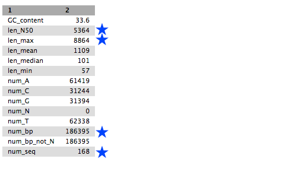
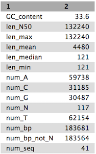
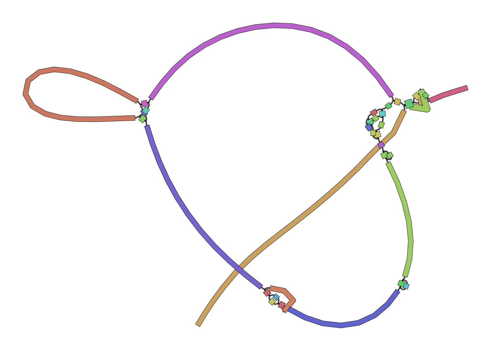
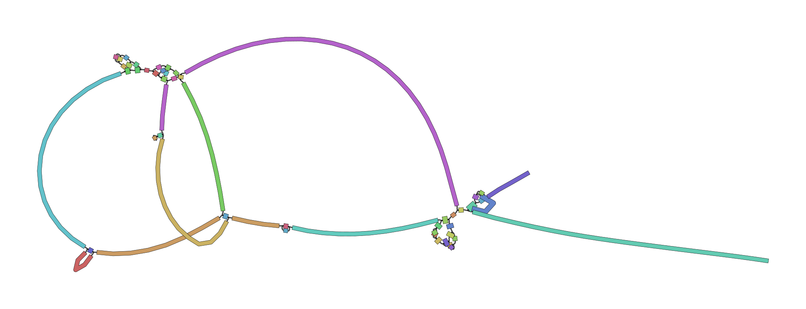
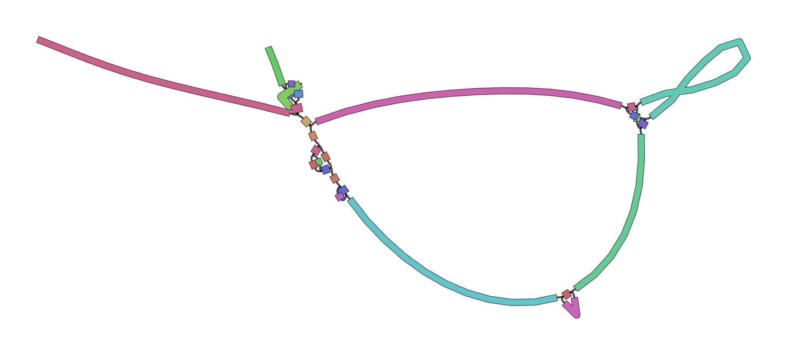
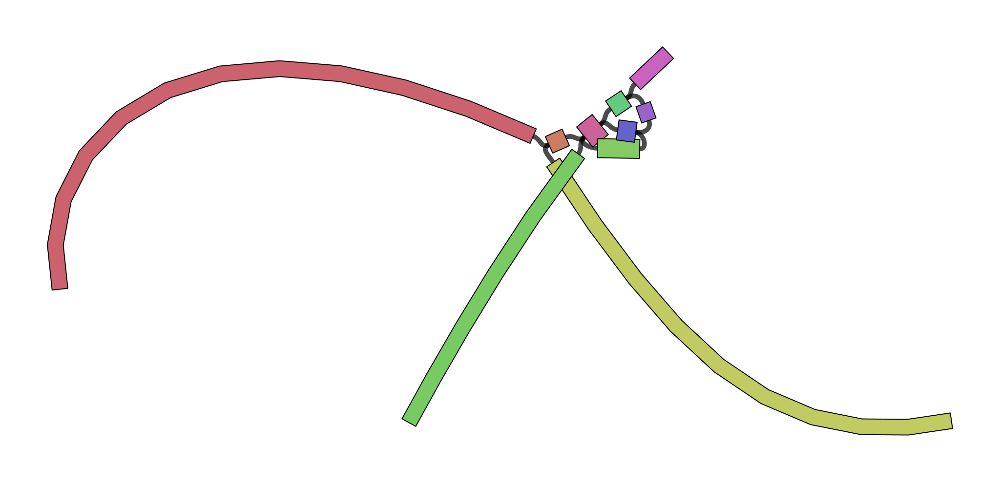
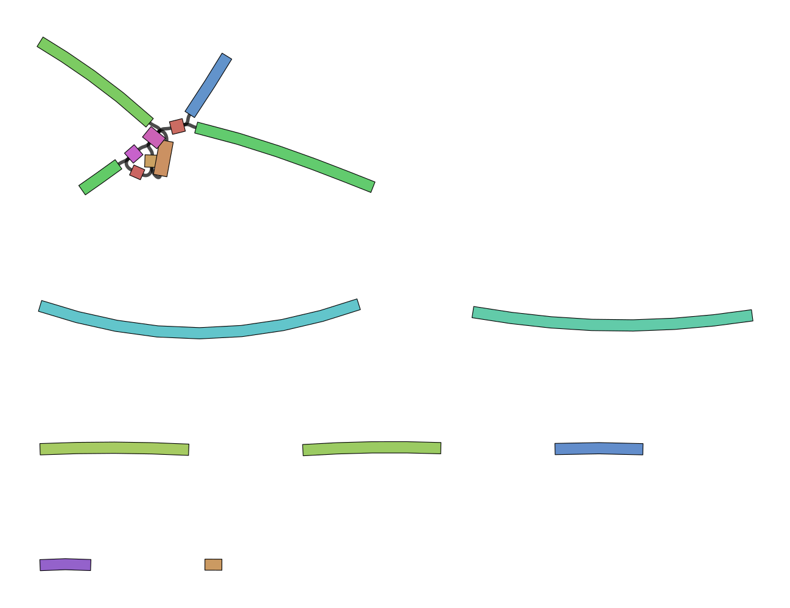
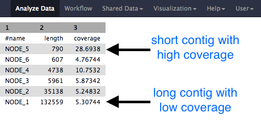
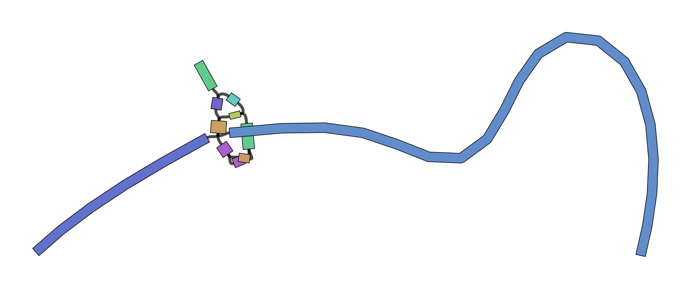

De Bruijn Graph Assembly
 Simon Gladman
Simon Gladman Helena Rasche
Helena Rasche Saskia Hiltemann
Saskia HiltemannOverview
question Questionsobjectives Objectives
What are the factors that affect genome assembly?
How does Genome assembly work?
requirements Requirements
Perform an optimised Velvet assembly with the Velvet Optimiser
Compare this assembly with those we did in the basic tutorial
Perform an assembly using the SPAdes assembler.
- Introduction to Galaxy Analyses
- Sequence analysis
- Quality Control: slides slides - tutorial hands-on
time Time estimation: 2 hours
Supporting Materials
last_modification Last modification: Jan 6, 2021
Optimised de Bruijn Graph assemblies using the Velvet Optimiser and SPAdes
In this activity, we will perform de novo assemblies of a short read set using the Velvet Optimiser and the SPAdes assemblers. We are using the Velvet Optimiser for illustrative purposes. For real assembly work, a more suitable assembler should be chosen - such as SPAdes.
The Velvet Optimiser is a script written by Simon Gladman to optimise the k-mer size and coverage cutoff parameters for Velvet. More information can be found here
SPAdes is a de novo genome assembler written by Pavel Pevzner’s group in St. Petersburg. More details on it can be found here
Agenda
In this tutorial, we will deal with:
Get the data
We will be using the same data that we used in the introductory tutorial, so if you have already completed that and have the data, skip this section.
hands_on Hands-on: Getting the data
Create and name a new history for this tutorial.
tip Tip: Creating a new history
Click the new-history icon at the top of the history panel
If the new-history is missing:
- Click on the galaxy-gear icon (History options) on the top of the history panel
- Select the option Create New from the menu
Import the sequence read raw data (*.fastq) from Zenodo
https://zenodo.org/record/582600/files/mutant_R1.fastq https://zenodo.org/record/582600/files/mutant_R2.fastqtip Tip: Importing data via links
- Copy the link location
Open the Galaxy Upload Manager (galaxy-upload on the top-right of the tool panel)
- Select Paste/Fetch Data
Paste the link into the text field
Press Start
- Close the window
By default, Galaxy uses the URL as the name, so rename the files with a more useful name.
Rename the files galaxy-pencil
- The name of the files are the full URL, let’s make the names a little clearer
- Change the names to just the last part,
Mutant_R1.fastq,Mutant_R2.fastqrespectivelytip Tip: Renaming a dataset
- Click on the galaxy-pencil pencil icon for the dataset to edit its attributes
- In the central panel, change the Name field
- Click the Save button
question Questions
- What are four key features of a FASTQ file?
- What is the main difference between a FASTQ and a FASTA file?
Assembly with the Velvet Optimiser
We will perform an assembly with the Velvet Optimiser, which automatically runs and optimises the output of the Velvet assembler (Zerbino and Birney 2008). It will automatically choose a suitable value for the k-mer size (k). It will then go on to optimise the coverage cutoff (cov_cutoff) which corrects for read errors. It will use the “n50” metric for optimising the k-mer size and the “total number of bases in contigs” for optimising the coverage cutoff.
hands_on Hands-on: Assemble with the Velvet Optimiser
- Velvet Optimiser tool: Optimise your assembly with the following parameters:
- “Start k-mer size”:
45- “End k-mer size”:
73- “Input file type”:
Fastq- “Single or paired end reads”:
Paired- param-file “Select first set of reads”:
mutant_R1.fastq- param-file “Select second set of reads”:
mutant_R2.fastq
Your history will now contain a number of new files:
- Velvet optimiser contigs
- A fasta file of the final assembled contigs
- Velvet optimiser contig stats
- A table of the lengths (in k-mer length) and coverages (k-mer coverages) for the final contigs.
Have a look at each file.
hands_on Hands-on: Get contig statistics for Velvet Optimiser contigs
- Fasta Statistics tool: Produce a summary of the velvet optimiser contigs:
- param-file “fasta or multifasta file”: Select your velvet optimiser contigs file
View the output
question Questions
Compare the output we got here with the output of the simple assemblies obtained in the introductory tutorial.
- What are the main differences between them?
- Which has a higher “n50”? What does this mean?
Tables of results from (a) Simple assembly and (b) optimised assembly.
(a) 
(b) 
details Details: Further reading on assembly with Velvet
- Heuristic Resolution of Repeats and Scaffolding in the Velvet Short-Read de Novo Assembler (Zerbino et al. 2009)
Visualisation of the Assembly
Now that we’ve assembled the genomes, let’s visualise this assembly using Bandage (Wick et al. 2015). This tool will let us better understand how the assembly graph really looks, and can give us a feeling for if the genome was well assembled or not.
Currently VelvetOptimiser does not include the LastGraph output, so we will manually run velveth and velvetg with the optimised parameters.
hands_on Hands-on: Manually running velvetg/h
Locate the output called “VelvetOptimiser: Contigs” in your history
Click the (i) information icon
Check the tool
stderrin the information page for the optimised k-mer value
question Question
What was the optimal k-mer value? (referred to as “hash” in the stderr log)
solution Solution
55
With this information in hand, let’s run velvet:
hands_on Hands-on: Manually running velvetg/h
- velveth tool: Prepare a dataset for the Velvet velvetg Assembler
- “Hash length”:
55- “Insert Input Files”:
- 1: Input Files
- “file format”:
fastq- “read type”:
shortPaired reads- “Dataset”:
mutant_R1.fastq- “Insert Input Files”:
- 2: Input Files
- “file format”:
fastq- “read type”:
shortPaired reads- “Dataset”:
mutant_R2.fastq- velvetg tool: Velvet sequence assembler for very short reads
- “Velvet dataset”: output from velveth tool
- “Generate velvet LastGraph file”:
Yes- “Coverage cutoff”:
Specify Cutoff Value
- “Remove nodes with coverage below”:
1.44- “Using Paired Reads”:
Yes
The LastGraph contains a detailed representation of the De Bruijn graph, which can give us an idea how velvet has assembled the genome and potentially resolved any conflicts.
hands_on Hands-on: Bandage
- Bandage Image tool: visualize de novo assembly graphs
- “Graphical Fragment Assembly”: The “LastGraph” output of velvetg tool
- “Produce jpg, png or svg file?”:
.svg- Execute
- View the output file
And now you should be able to see the graph that velvet produced:

Interpreting Bandage Graphs
k-mer size has a significant effect on the assembly. You can play around with various k-mers to see this effect in practice.
| k-mer | graph |
|---|---|
| 21 |  |
| 33 |  |
| 53 |  |
| 77 |  |
{kind=link}
{kind=link}
{kind=link}
{kind=link}
The next thing to be aware of is that there can be multiple valid interpretations of a graph, all equally valid in absence of other data. The following is taken verbatim from Bandage’s wiki:
For a simple case, imagine a bacterial genome that contains a single repeated element in two separate places in the chromosome:
A researcher (who does not yet know the structure of the genome) sequences it, and the resulting 100 bp reads are assembled with a de novo assembler:
Because the repeated element is longer than the sequencing reads, the assembler was not able to reproduce the original genome as a single contig. Rather, three contigs are produced: one for the repeated sequence (even though it occurs twice) and one for each sequence between the repeated elements.
Given only the contigs, the relationship between these sequences is not clear. However, the assembly graph contains additional information which is made apparent in Bandage:
There are two principal underlying sequences compatible with this graph: two separate circular sequences that share a region in common, or a single larger circular sequence with an element that occurs twice:
Additional knowledge, such as information on the approximate size of the bacterial chromosome, can help the researcher to rule out the first alternative. In this way, Bandage has assisted in turning a fragmented assembly of three contigs into a completed genome of one sequence.
Assemble with SPAdes
We will now perform an assembly with the much more modern SPAdes assembler (Bankevich et al. 2012). It goes through a similar process to Velvet in the fact that it uses and simplifies de Bruijn graphs but it uses multiple values for k-mer size and combines the resultant graphs. This combination produces very good assemblies. When using SPAdes it is typical to choose at least 3 k-mer sizes. One low, one medium and one high. We will use 33, 55 and 91.
hands_on Hands-on: Assemble with SPAdes
SPAdes tool: Assemble the reads:
- “Run only assembly”:
yes- “K-mers to use separated by commas”:
33,55,91[note: no spaces!]- “Coverage cutoff”:
auto- param-file “Files -> forward reads”:
mutant_R1.fastq- param-file “Files -> reverse reads”:
mutant_R2.fastq- “Output final assembly graph with scaffolds?”:
Yes
You will now have 5 new files in your history:
- two Fasta files, one for contigs and one for scaffolds
- two statistics files, one for contigs and one for scaffolds
- the SPAdes log file.
Examine each file, especially the stats files.

question Questions
- Why would one of the contigs have much higher coverage than the others?
- What could this represent?
hands_on Hands-on: Visualize assembly with Bandage
- Bandage tool with the following parameters:
- “Graphical Fragment Assembly”:
assembly graph with scaffoldsoutput from SPAdes tool- Examine the output image galaxy-eye
The visualized assembly should look something like this:

question Questions
Which assembly looks better to you? Why?
hands_on Hands-on: Get contig statistics for SPAdes contigs
- Fasta Statistics tool: Produce a summary of the SPAdes contigs:
- param-file “fasta or multifasta file”: Select your velvet optimiser contigs file
Look at the output file.
question Questions
Compare the output we got here with the output of the simple assemblies obtained in the introductory tutorial.
- What are the main differences between them?
- Did SPAdes produce a better assembly than the Velvet Optimiser?
keypoints Key points
We learned about how the choice of k-mer size will affect assembly outcomes
We learned about the strategies that assemblers use to make reference genomes
We performed a number of assemblies with Velvet and SPAdes.
You should use SPAdes or another more modern assembler than Velvet for actual assemblies now.
References
- Zerbino, D. R., and E. Birney, 2008 Velvet: Algorithms for de novo short read assembly using de Bruijn graphs. Genome Research 18: 821–829. 10.1101/gr.074492.107
- Zerbino, D. R., G. K. McEwen, E. H. Margulies, and E. Birney, 2009 Pebble and Rock Band: Heuristic Resolution of Repeats and Scaffolding in the Velvet Short-Read de Novo Assembler (S. L. Salzberg, Ed.). PLoS ONE 4: e8407. 10.1371/journal.pone.0008407
- Bankevich, A., S. Nurk, D. Antipov, A. A. Gurevich, M. Dvorkin et al., 2012 SPAdes: A New Genome Assembly Algorithm and Its Applications to Single-Cell Sequencing. Journal of Computational Biology 19: 455–477. 10.1089/cmb.2012.0021
- Wick, R. R., M. B. Schultz, J. Zobel, and K. E. Holt, 2015 Bandage: interactive visualization ofde novogenome assemblies: Fig. 1. Bioinformatics 31: 3350–3352. 10.1093/bioinformatics/btv383
Feedback
Did you use this material as an instructor? Feel free to give us feedback on how it went.

Citing this Tutorial
- Simon Gladman, Helena Rasche, Saskia Hiltemann, 2021 De Bruijn Graph Assembly (Galaxy Training Materials). /training-material/topics/assembly/tutorials/debruijn-graph-assembly/tutorial.html Online; accessed TODAY
- Batut et al., 2018 Community-Driven Data Analysis Training for Biology Cell Systems 10.1016/j.cels.2018.05.012
details BibTeX
@misc{assembly-debruijn-graph-assembly, author = "Simon Gladman and Helena Rasche and Saskia Hiltemann", title = "De Bruijn Graph Assembly (Galaxy Training Materials)", year = "2021", month = "01", day = "06" url = "\url{/training-material/topics/assembly/tutorials/debruijn-graph-assembly/tutorial.html}", note = "[Online; accessed TODAY]" } @article{Batut_2018, doi = {10.1016/j.cels.2018.05.012}, url = {https://doi.org/10.1016%2Fj.cels.2018.05.012}, year = 2018, month = {jun}, publisher = {Elsevier {BV}}, volume = {6}, number = {6}, pages = {752--758.e1}, author = {B{\'{e}}r{\'{e}}nice Batut and Saskia Hiltemann and Andrea Bagnacani and Dannon Baker and Vivek Bhardwaj and Clemens Blank and Anthony Bretaudeau and Loraine Brillet-Gu{\'{e}}guen and Martin {\v{C}}ech and John Chilton and Dave Clements and Olivia Doppelt-Azeroual and Anika Erxleben and Mallory Ann Freeberg and Simon Gladman and Youri Hoogstrate and Hans-Rudolf Hotz and Torsten Houwaart and Pratik Jagtap and Delphine Larivi{\`{e}}re and Gildas Le Corguill{\'{e}} and Thomas Manke and Fabien Mareuil and Fidel Ram{\'{\i}}rez and Devon Ryan and Florian Christoph Sigloch and Nicola Soranzo and Joachim Wolff and Pavankumar Videm and Markus Wolfien and Aisanjiang Wubuli and Dilmurat Yusuf and James Taylor and Rolf Backofen and Anton Nekrutenko and Björn Grüning}, title = {Community-Driven Data Analysis Training for Biology}, journal = {Cell Systems} }